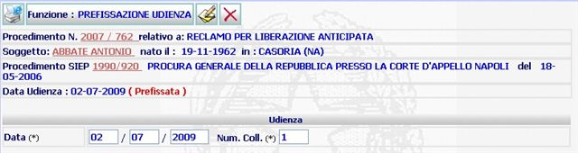

DETTAGLIO PREFISSAZIONE UDIENZA: la funzione prescelta consente di visualizzare la data di prefissazione udienza inserita ed eventualmente modificarla o cancellarla.
LE MASCHERE VIDEO
La funzione in esame DETTAGLIO PREFISSAZIONE UDIENZA, viene realizzata attraverso l'utilizzo della maschera che segue.
Sono presenti due campi, contrassegnati con asterisco, da compilare obbligatoriamente.

COME FARE PER ...
| Per visualizzare il dettaglio del procedimento Sius l'utente deve cliccare sul link relativo all'Anno/Numero del procedimento Sius evidenziato in rosso; |

| Per visualizzare il dettaglio del soggetto l'utente deve cliccare sul link relativo al cognome/nome del soggetto evidenziato in rosso; |

| Per visualizzare il dettaglio del procedimento Siep l'utente deve cliccare sul link relativo all' Anno/Numero del procedimento Siep evidenziato in rosso; |

|
Per modificare la data di prefissazione
udienza l'utente deve
cliccare l'icona di modifica
|
| Per
cancellare la data di prefissazione
udienza l'utente deve cliccare sul
pulsante
|
CAMPI
I dati che consentono di fissare una data di prefissazione udienza in un procedimento sono i seguenti:
| NOME | DESCRIZIONE |
| Data | Compilare il campo
esclusivamente selezionando la data dalla
lista predefinita delle udienze
|
| Num. Coll. | Il campo verrà automaticamente compilato con la selezione della data dalla lista predefinita udienze. |
PULSANTI
Oltre al pulsante
 di stampa del contesto (videata)
di stampa del contesto (videata)
|
PULSANTE |
DESCRIZIONE |
|
|
Questo pulsante ha
lo scopo di consentire di
modificare i dati della maschera visualizzata |
|
|
Questo pulsante ha
lo scopo di consentire di cancellare i dati della maschera
visualizzata |